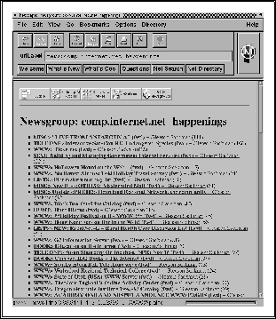

Det finnes et vell av programmer for å aksessere News, dvs. lese og poste
innlegg, og hver person har gjerne en spesiell favoritt. Med inntoget
av World Wide Web (se avsnitt  ), har det imidlertid dukket opp en del
kombinasjonsprogrammer for å aksessere Internet, og programmet
netscape som vist i figur er nettopp et slikt
program. Det er dette programmet vi kommer til å benytte på
Intervett kursene under demoer og øvelser.
), har det imidlertid dukket opp en del
kombinasjonsprogrammer for å aksessere Internet, og programmet
netscape som vist i figur er nettopp et slikt
program. Det er dette programmet vi kommer til å benytte på
Intervett kursene under demoer og øvelser.